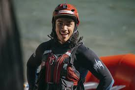

Welcome
Welcome to Pear Rafters, where adventure meets nature on the river. We are a passionate team of professional river guides and outdoor enthusiasts dedicated to delivering thrilling, safe, and unforgettable white-water rafting experiences. From first-time rafters to seasoned adventurers, we create moments that build confidence, strengthen teamwork, and leave lasting memories. With a strong commitment to safety, sustainability, and customer satisfaction, Pear Rafters proudly guides every trip with skill, care, and a deep love for the water.